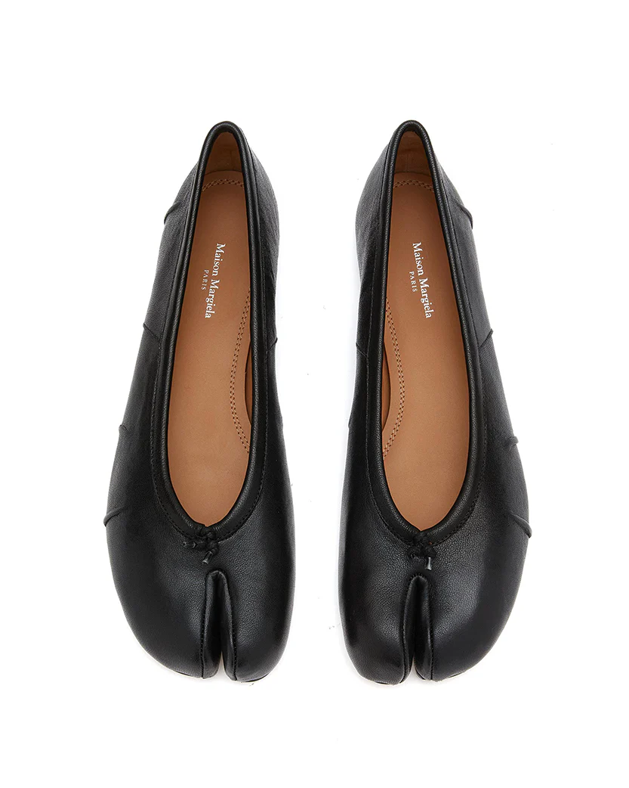
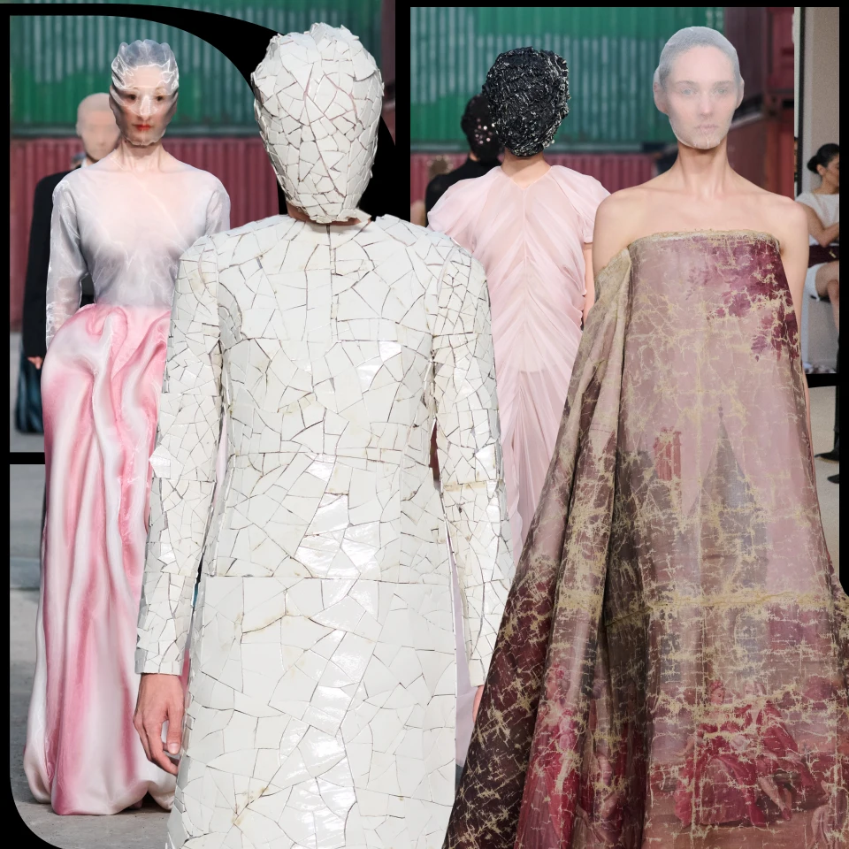

Maison Margiela відомий своєю анонімністю. Моделі часто приховують обличчя, щоб увага була тільки на одязі.
Один із найвідоміших елементів — Tabi boots, які мають розділений носок.


Бренд не слідує трендам — він їх створює. Це більше мистецтво, ніж просто одяг.
Саме тому Maison Margiela вважається одним із найвпливовіших брендів у світі моди.